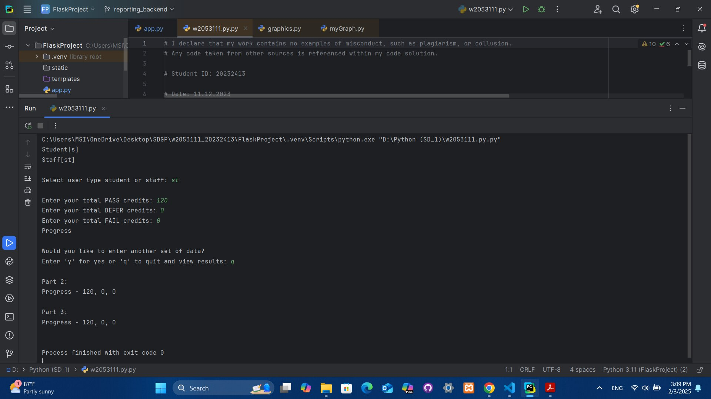
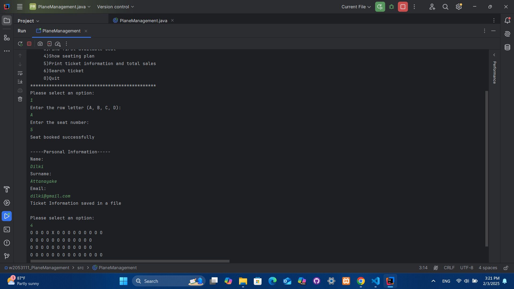

CoastalCanopy.lk is a comprehensive, community-oriented web application dedicated to the monitoring,
protection, and sustainable management of mangrove ecosystems in Sri Lanka. It serves as a platform for
environmental enthusiasts, researchers, and local communities to actively engage in mangrove conservation efforts.
Key Features:
Mangrove Mapping & Monitoring: Users can view and analyze mangrove coverage through interactive maps,
helping to track environmental changes over time.
Community Reporting: A feature that enables users to report illegal deforestation, and illegal activities
related mangrove ecosystems through an easy-to-use interface. Users can submit observations, upload images with GPS locations,
and contribute valuable data for analysis.
Gamification & Engagement: Users can participate in challenges, earn rewards, and
compete on leaderboards to encourage active participation in conservation initiatives.
Educational Resources: The platform provides articles, infographics, and interactive learning materials
to raise awareness about the importance of mangroves.
Admin & Content Management: Team members can update data, moderate reports, and ensure that the platform
remains informative and up to date.
Why CoastalCanopy.lk?
By integrating modern technology with environmental conservation, CoastalCanopy.lk aims to bridge the gap between
conservation and community action, empowering individuals to play an active role in safeguarding Sri Lanka's coastal ecosystems.
Life Below Water Website
Life Below Water is an interactive and educational platform dedicated to raising awareness about the importance of ocean conservation.
With marine ecosystems facing growing threats from pollution, climate change, and human activities, this website serves as a hub for information,
engagement, and action.
My role includes;
🌊 User Profile: Visitors can create personalized accounts, track their interactions,
and receive curated content based on their interests in marine conservation.
👥 Interactive Team Page: Showcasing the passionate team behind the initiative,
highlighting their contributions, and connecting users with experts, researchers, and volunteers.
🖊️ Page Editor: An intuitive interface that showcase my contributions to the website, ensuring the platform stays relevant and informative.
🌍 Call to Action: Encouraging users to make a difference by participating in conservation programs, volunteering for cleanup initiatives,
and supporting marine sustainability projects.
Why It Matters?
Our oceans cover more than 70% of the Earth's surface, yet they are among the most threatened ecosystems.
The Life Below Water website fosters a global community of ocean advocates, empowering individuals to take meaningful steps
toward protecting marine life. Whether through education, collaboration, or direct action, this platform bridges the gap between awareness and impact.

Academic Progression Outcome Predictor
The "Academic Progression Outcome Predictor" is a Python program designed to help students predict their progression outcomes at the end
of each academic year based on the number of credits they have achieved. The program calculates one of four outcomes: Progress,
Trailing (module trailer), Module Retriever, or Exclude, depending on the student's performance in their courses.
Key Features:
Progression Outcome Calculation: The program prompts the user to input credits at Pass, Defer, and Fail, and then determines
the student's progression outcome. The outcomes are:
Progress: The student can proceed to the next level.
Trailing (module trailer): The student is progressing but with modules left to complete.
Module Retriever: The student must retrieve modules.
Exclude: The student is excluded due to insufficient performance.
The program allows staff members to predict progression outcomes for multiple students. It runs in a loop until the user decides to quit by
entering 'q'. Optionally, the program prompts for continuous inputs by entering 'y' to continue.
Histogram Visualization: After the data entry is completed, the program generates a histogram using the graphics.py
module to visually represent the number of students who fall into each progression category (Progress, Trailing, Module Retriever, Exclude).
Storing Data in Lists: The program stores input progression data in a list or nested list structure. After the histogram is
displayed, it retrieves and prints out the progression outcomes along with the respective credits in the following format: Progress - 120, 0, 0.
Text File Storage: The program also saves the progression data to a text file. It later retrieves and prints the data in the
same format, offering a persistent storage option for user input.
User-Defined Functions: To ensure modularity and clarity, the program uses user-defined functions to handle specific tasks
such as validation, calculation of outcomes, and data storage.
Descriptive Variable and Function Names: All variables and functions are given clear, descriptive names to enhance the
readability and maintainability of the code.

Private Plane Seat Reservation Tracker
The "Private Plane Seat Reservation Tracker" is a user-friendly Java application designed to streamline the process of booking and
managing private plane seats. This application caters to both travelers and flight operators, enhancing efficiency and ensuring a smooth
reservation experience.
Key Features:
Real-Time Seat Availability: Displays real-time information on available seats for various private flights,
allowing users to easily find and reserve seats that meet their needs.
Search and Filter Options: Users can search for flights based on criteria such as date, destination, and seat number,
with advanced filtering options to narrow down their choices.
Reservation Management: Allows users to view, modify, or cancel their reservations.
By incorporating these features, the "Private Plane Seat Reservation Tracker" aims to improve the overall booking experience, making it easier
and more efficient for users to manage their travel plans.